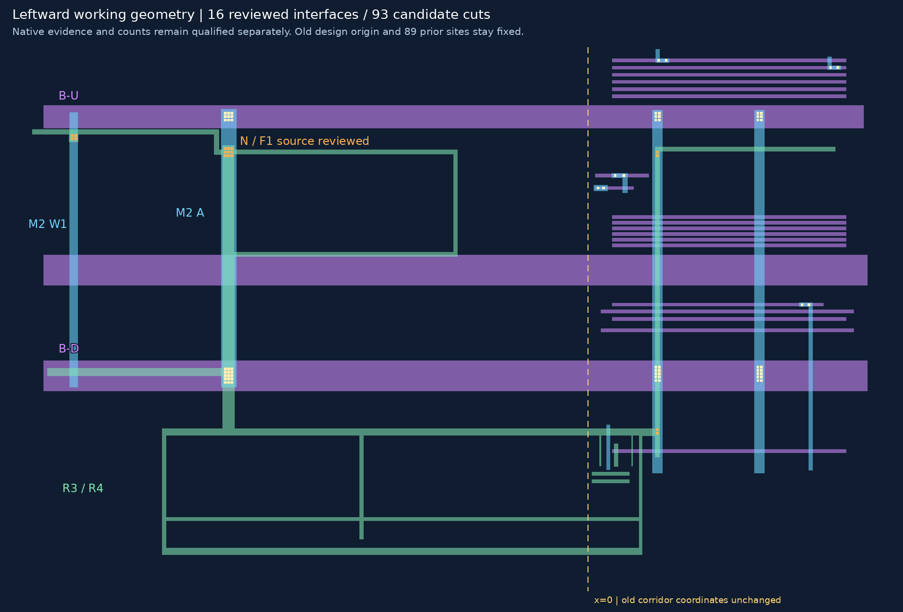
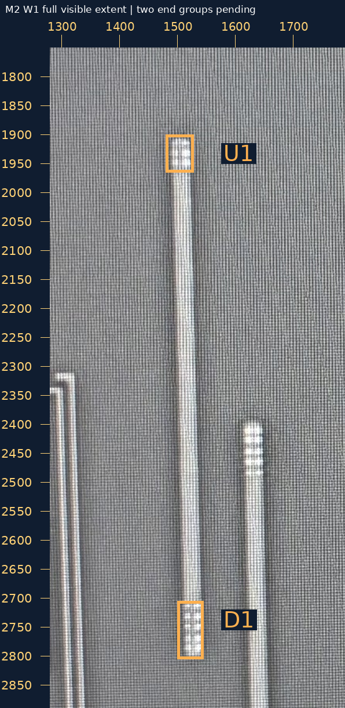
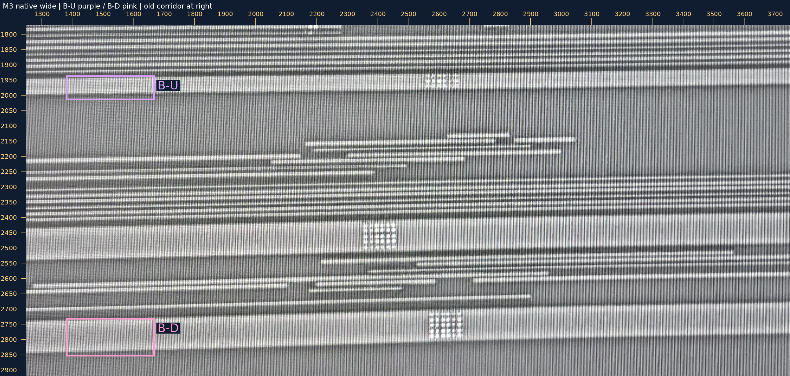
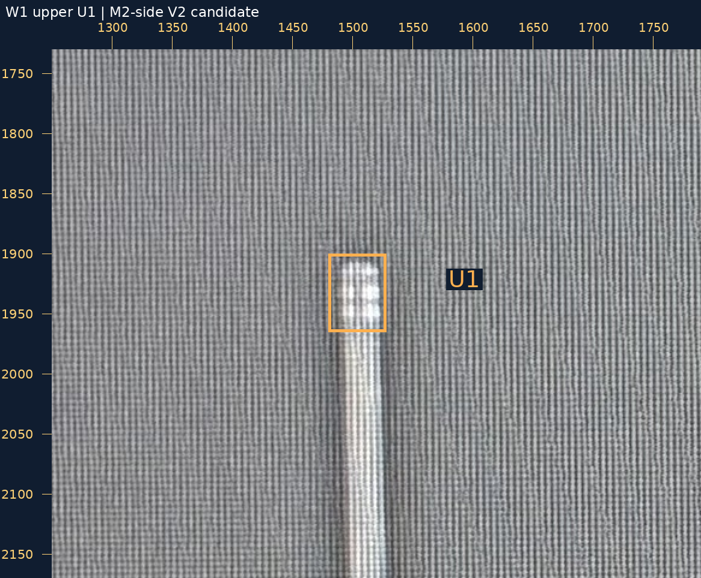
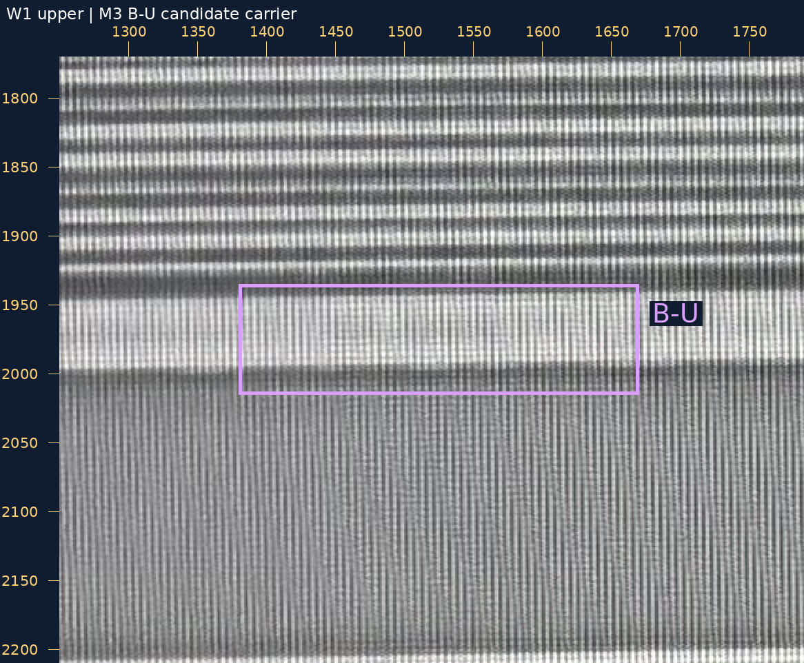
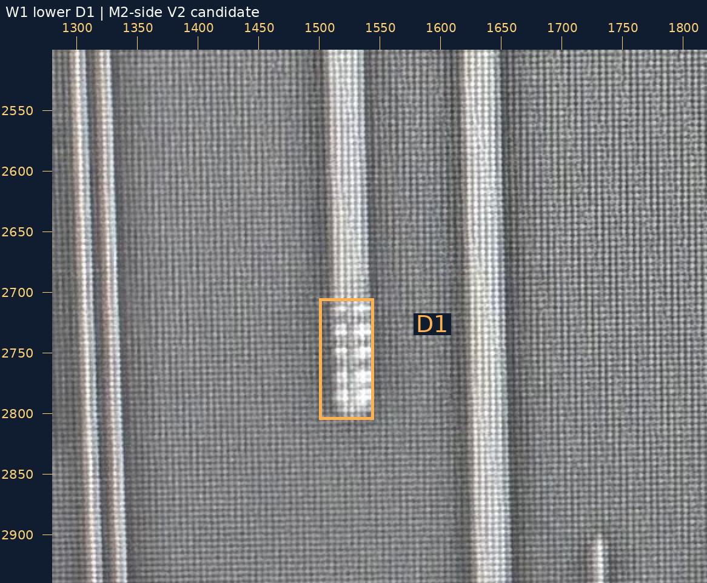
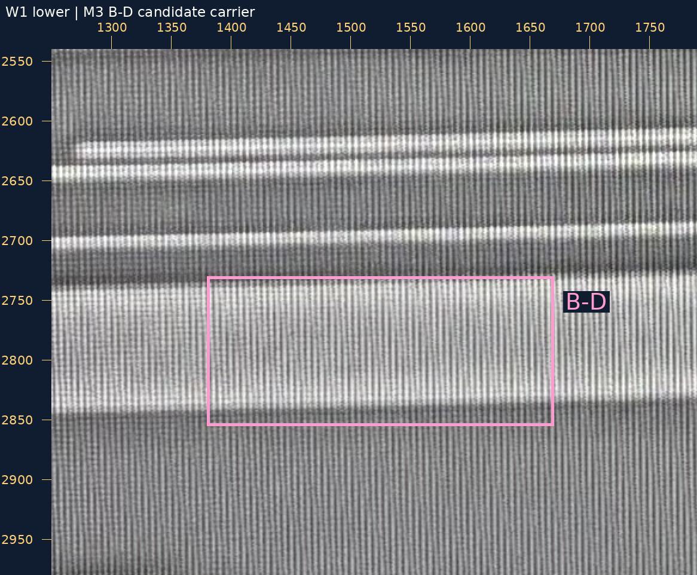

2026-10-30 · 新接口身份与承载复核 · 不逐孔审批
你的原话“F1：是 V1，接 W1”已保存。先补M1台阶，再加W1源锚点和下方连续部分，最后接入完整F1候选孔组。现在36条金属候选、16条已审局部接口、93个设计候选孔；原15接口及89孔中心保持。
F1的2×2是AI设计候选，物理孔数／尺寸未知。W1的旧原生锚点[1502,1920]→[1515,2320]保持，下端连续部分由独立局部块绑定来源，未把旧锚点移动到新终点。设计视口／原点不变。
W1可见宽竖段到下端孔组为止；右边另一条从中部开始的M2与它留有间隙，不直接并入。中部M3只是交叉，未见已审V2便不自动连接。未宣称全网或所有邻支路完成。
完整SVG · 几何大图 · 切换M1/V1/M2/V2/M3

| 位置 | 身份及承载候选 | 两层原生大邻域 |
|---|---|---|
| W1-U1 | W1 上端橙框 U1 是否为 V2，并接 M3 紫色B-U（RT-M3-UP）宽母线？只判身份和承载，孔数未知。 | M2／M3并排大图 |
| W1-D1 | W1 下端橙框 D1 是否为 V2，并接 M3 粉色B-D（RT-M3-DOWN）宽母线？只判身份和承载，孔数未知。 | M2／M3并排大图 |
可回复“W1-U1、W1-D1均为V2，分别接B-U、B-D”，或逐项修正。这两处是W1上的新接口，不是已审A的U/D；F1、N、Q1及旧接口不重问。孔数暂不确认，M3自身孔组不作为V2证据。
图片各用本层原生坐标，未互相投影；框是搜索范围，不是精密金属边界。目前U1/D1均只作来源候选，未加入工作接口，也未声称精密包围已通过。
本层原生范围[1280, 1750, 1790, 2890]，1×整数放大。
原图 · 大图
本层原生范围[1250, 1770, 3750, 2920]，1×整数放大。
原图 · 大图
本层原生范围[1250, 1730, 1790, 2170]，2×整数放大。
原图 · 大图
本层原生范围[1250, 1770, 1790, 2210]，2×整数放大。
原图 · 大图
本层原生范围[1280, 2500, 1820, 2940]，2×整数放大。
原图 · 大图
本层原生范围[1250, 2540, 1790, 2980]，2×整数放大。
原图 · 大图
F1人审原话 · 唯一恢复请求 · W1来源清单 · 两端裁决请求 · 本轮验证
source_to_design_transform=null，geometry_adopted=false，net_edges=[]，complete_network=false。旧照片／裁决／孔中心保持，README/site/gh-pages未改。浏览器交互未实测，资源／脚本和PNG检查见验证。